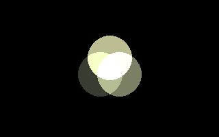

Help Center›FreeBASIC
Addkeyword
Parameter to the Put graphics statement which selects addition as the blitting method
Syntax
Put [ target, ] [ STEP ] ( x,y ), source [ ,( x1,y1 )-( x2,y2 ) ], Add[ ,multiplier ]Parameters
| Name | Description | |
|---|---|---|
multiplier | Optional value between 0 and 255. The source pixels are premultiplied by (multiplier / 256) before being added. If omitted, this value defaults to 255. |
Description
Add selects addition as the method for blitting an image buffer. For each source and target pixel, the values of each respective component are added together to produce the result.The addition is saturated - i.e. if the sum of the two values is 256 or more, then it will be cropped down to 255.
This method will work in all color modes. Mask colors (color 0 for indexed images, magenta (
RGB(255, 0, 255)) for full color images) will be skipped, though full color values of 0 (RGBA(0, 0, 0, 0)) will have also have no effect.Remarks
Differences from QB
- New to FreeBASIC
See also
Example
''open a graphics window
ScreenRes 320, 200, 16
''create a sprite containing a circle
Const As Integer r = 32
Dim c As Any Ptr = ImageCreate(r * 2 + 1, r * 2 + 1, 0)
Circle c, (r, r), r, RGB(255, 255, 192), , , 1, f
''put the sprite at three different multipier
''levels, overlapping each other in the middle
Put (146 - r, 108 - r), c, Add, 64
Put (174 - r, 108 - r), c, Add, 128
Put (160 - r, 84 - r), c, Add, 192
''free the memory used by the sprite
ImageDestroy c
''pause the program before closing
Sleep

Reference
- Documented in KeyPgAddGfx.html